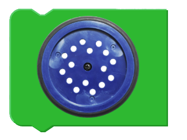
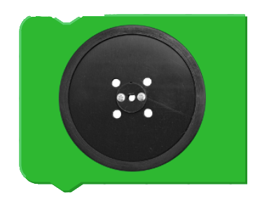

Basic Move Robot Control
The Move toolbox contains blocks to drive the robot forward and backward. There are also basic speed controls included in this toolbox.
List of available blocks:
Motor Selection Blocks - Reminder
To set the software to provide the correct speed values for straight line and cured motion, the program bust being with a Motor Selection Block.
Robot Kits may be supplied with two different motors which have different characteristics. Each program must have a motor selection block to configure the program for the motor type.
The wheels are the easiest way to tell which motors your robot has. To select the proper motor type, add one of these two blocks based on the color of your wheels. The Motor Selection Block should be placed immediately after the Start Block.
These blocks can be found in the Fusion Control toolbox.
Blocks:
 
Forward
Drive forward for 1 second then stop.
Block:
Backward
Drive reverse for 1 second then stop.
Block:
Fast
Change the default speed to 80.
Block:
Medium
Change the default speed to 60 (Default).
Block:
Slow
Change the default speed to 20.
Block:
Questions?
Contact Boxlight Robotics at support@BoxlightRobotics.com with a detailed description of the steps you have taken and observations you have made.
Email Subject: Basic Move Robot